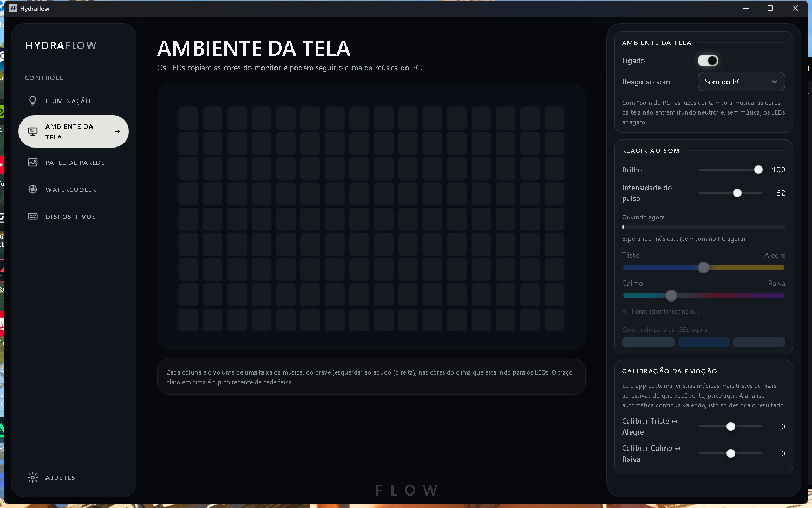

Efeitos que você controla
Cores, velocidade e presets em tempo real. Playlists trocam o efeito sozinhas e o favorito fica a um clique.
Efeitos animados, LEDs que copiam a tela e seguem a música, papel de parede animado e a tela do watercooler — num app leve, sem nuvem e sem conta.

Iluminação, tela, som e hardware — tudo no mesmo lugar, sem plugin de terceiro e sem pendurar processos.
Cores, velocidade e presets em tempo real. Playlists trocam o efeito sozinhas e o favorito fica a um clique.
Cada LED pega a cor do ponto onde está no layout. Fita atrás do monitor vira ambilight de verdade.
O brilho segue o som do PC e as cores acompanham a emoção da faixa — triste, alegre, calmo ou raiva.
GIF, WebP ou vídeo atrás dos ícones — e a mesma biblioteca alimenta a tela do watercooler.
A captura acontece na placa de vídeo via DXGI Desktop Duplication: só ~120×68 pixels chegam à CPU, e o Windows entrega um quadro apenas quando a tela muda. Com a tela parada, o app não processa nada.

O RGB da memória usa o PawnIO oficial, assinado pela Microsoft, baixado da fonte na hora da ativação — nada de modo de teste que quebra anti-cheat. Protocolos implementados a partir de SDK e documentação pública.
Instalador com termos de uso, atalho na área de trabalho e escolha da pasta. Fechar a janela deixa o app na bandeja, controlando os LEDs.
O executável não tem assinatura digital: na primeira vez o SmartScreen pode avisar — Mais informações → Executar assim mesmo.
Prefere compilar? O código está no GitHub — npm install e npm run dist.
Um cuida do computador. O outro cuida da luz. O ResetExplode é um projeto de outra pessoa — compartilhado aqui com todo o crédito.
Suíte de diagnóstico e otimização para Windows: sensores, benchmarks de CPU/GPU/ray tracing, limpeza, drivers, overlay e ferramentas de inicialização.
O ResetExplode não foi feito por mim. Todos os créditos são do Gustavo. Esta página apenas espelha a versão oficial para download.
8574b93e81f5e4d9dfb80aca7d8bc7719a025d733dcae0248a2086f98bfa1e33
Se puder, baixe pelo link original: é o autor que recebe as estatísticas de download. O espelho existe só para deixar os dois apps no mesmo lugar.